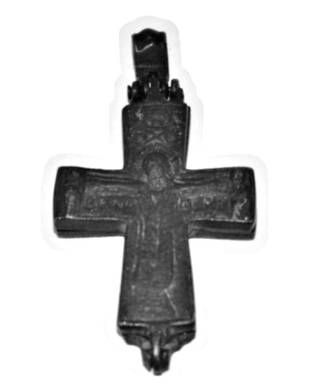
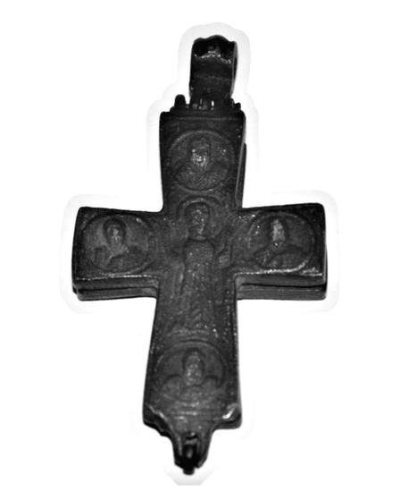

Catalog › CE-0276 · BUR2022-4
Encolpion bivalv de bronz cu Răstignirea și Maica Domnului orantă, cat. 4, Muzeul Bursa
sec. IX–XII (801–1200) · loc necunoscut · Muzeul Arheologic Bursa (Bursa Arkeoloji Müzesi), Turcia, inv. 2017/73
double-sided reliquary cross (enkolpion), bronz; c. IX–XII (801–1200); find spot unknown; kept at Muzeul Arheologic Bursa (Bursa Arkeoloji Müzesi), Turcia.




Identificare
- Categorie
- Encolpion bivalv (relicvar)
- Material
- Bronz
- Tehnică
- Turnare în relief; Gravare (incizie)
- Stare
- Corodată
- Dimensiuni
- Î 99 × L 53 × Gr 14 mm
Iconografie
- Avers
- Răstignirea (Hristos în colobium); Sf. Ioan
- Descriere avers
- Hristos răstignit, cu nimb, capul ușor întors spre stânga, în colobium, cu picioarele pe un suppedaneum; la dreapta Maica Domnului, la stânga Sf. Ioan; deasupra, soarele (stânga) și luna în formă de semilună (dreapta), nu foarte clare. Sub brațele lui Hristos, inscripții uzate, netranscrise de autor.
- Revers
- Maica Domnului Orantă; Evangheliști în medalioane
- Descriere revers
- Maica Domnului orantă, în picioare, în veșmânt larg, în centru; pe capetele brațelor, în medalioane, cei patru evangheliști cu Evanghelia în mâna stângă.
Datare și atribuire
- Datare
- sec. IX–XII (801–1200)
Descoperire
- Context
- Colecție (fără context)
- Coordonate
- 40.1826° N, 29.0665° E
- Precizia locului
- Loc de păstrare (loc de descoperire incert)
Păstrare și referințe
- Colecție
- Muzeul Arheologic Bursa (Bursa Arkeoloji Müzesi), Turcia
- Nr. inventar
- 2017/73
- Bibliografie
- U. Elyiğit, Bursa Arkeoloji Müzesi’ndeki Madeni Haç Örnekleri, în „Art-Sanat”, 18, 2022, p. 173–200 [Elyiğit 2022], p. 187–188, cat. nr. 4, reprodusă la G. 7 și G. 8 (fotografii), G. 9 și G. 10 (desene) (p. 188–189). DOI: 10.26650/artsanat.2022.18.1090632
- Figura
- G. 7, G. 8; G. 9, G. 10 (desene)
- Planșe
- Elyiğit 2022, p. 188–189
- Analogii
- Muzeul Erimtan; Giresun (inv. 135/13.2.92); Ereğli (inv. 14.1.1973-1422, A176.69-1124); Aksaray (inv. 9.1.09); Niğde (inv. 2011-3); Sardes (Waldbaum 1983, pl. 52, nr. 901–902); Efes (după Elyiğit 2022)
- Observații
- Datare generală a grupului de haçuri din articol, după Elyiğit: sec. IX–XII; piesa nu are datare proprie. Au rămas balamalele de la capetele brațului vertical și inelul de suspendare. Inscripțiile de pe avers sunt incizate și nu pot fi transcrise; autorul spune că, la piese similare, lângă Maica Domnului stă în greacă „iată pe mama ta”, iar lângă Ioan „iată pe fiul tău”. Intrat în muzeu prin confiscare, 01.02.2007. Autorul indică drept analogii piese de la Erimtan, Giresun, Ereğli, Aksaray și Niğde, precum și cele de la Sardes și Efes. Locul descoperirii nu e cunoscut cu precizie; punctul de pe hartă marchează locul de păstrare (Muzeul Arheologic Bursa), nu locul descoperirii. Coordonate: nu sunt date în sursă.
Citare: Corpus Encolpiorum, CE-0276, Encolpion bivalv de bronz cu Răstignirea și Maica Domnului orantă, cat. 4, Muzeul Bursa, --root/piese/BUR2022-4/ (accesat 2026-10-20).